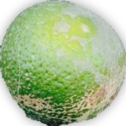

结痂病介绍
病原：结痂病通常由 柑橘痂圆孢菌（Elsinoe fawcetti） 引起，这是一种常见的植物病害。
症状：果实表面出现暗灰色或黑色的病斑，病斑表面有结痂物，影响果实外观和商品价值。
预防措施
- 加强果园管理，改善通风和光照条件，减少湿气积聚。
- 及时清理果园内的落叶、落果和病残体，减少病原体的初侵染源。
- 合理修剪树木，保持植物间的适当间距。
- 使用抗病品种进行种植。
- 在病害高发季节前，使用适当的杀菌剂进行预防性喷洒。
药物治疗
- 多菌灵： 使用适当浓度的多菌灵可湿性粉剂进行喷洒，根据病害情况定期施药。
- 代森锰锌： 可作为保护性杀菌剂使用，定期喷洒以减少病原体滋生。
- 其他杀菌剂：如波尔多液等，根据病害发生情况和当地气候条件，选择合适的杀菌剂进行喷洒。
- 注意：喷洒时应均匀覆盖叶片和果实表面，确保药剂能够充分接触到病原体。同时，注意药剂的轮换使用，避免病原体产生抗药性。
结痂病示例图

结痂病果实示例
注：图片仅为示例，实际结痂病症状可能因病原体种类、环境条件等因素而有所不同。